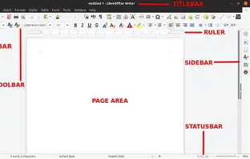
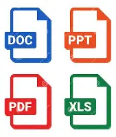
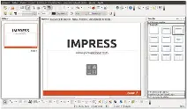

Guía Completa de LibreOffice
Manual completo para aprender a utilizar la suite ofimática gratuita y de código abierto

Manual completo para aprender a utilizar la suite ofimática gratuita y de código abierto
Descubre la suite ofimática gratuita más poderosa del mercado
LibreOffice es una suite ofimática de código abierto desarrollada por The Document Foundation. Surgió como una bifurcación de OpenOffice.org en 2010 y desde entonces ha crecido gracias a una comunidad global de desarrolladores.
"Aprender a utilizar las herramientas básicas y avanzadas de LibreOffice para crear documentos profesionales, hojas de cálculo, presentaciones y más, de manera eficiente y gratuita."
Todo lo que necesitas saber sobre esta suite ofimática
Suite ofimática gratuita y de código abierto que incluye procesador de textos, hojas de cálculo, presentaciones, bases de datos y más. Es la alternativa perfecta a Microsoft Office.
Windows: 7, 8, 10, 11 (32 y 64 bits)
macOS: 10.10 o superior
Linux: Todas las distribuciones principales
Formatos soportados: ODT, DOC, DOCX, XLS, XLSX, PPT, PPTX, PDF y más
Conoce todas las herramientas que incluye la suite
Herramienta completa para crear documentos, cartas, informes y libros. Incluye corrector ortográfico, auto-corrección, estilos y plantillas profesionales.
Potente aplicación para análisis de datos, cálculos financieros y gestión de información. Compatible con fórmulas de Excel y funciones avanzadas.
Crea presentaciones impactantes con animaciones, transiciones y efectos multimedia. Ideal para clases, conferencias y reuniones empresariales.
Editor de gráficos vectoriales para crear diagramas, organigramas, planos y ilustraciones. Soporte para capas, estilos y conectores inteligentes.
Sistema de gestión de bases de datos con interfaz gráfica. Compatible con múltiples motores como MySQL, PostgreSQL, Access y más.
Editor especializado para crear y editar fórmulas matemáticas y científicas. Integrable con Writer e Impress para documentos académicos.
Familiarízate con el entorno de trabajo principal

Acceso a todas las funciones organizadas en menús desplegables: Archivo, Editar, Ver, Insertar, Formato, etc.
Accesos directos a funciones comunes. Puedes personalizarlas añadiendo o quitando botones según tus necesidades.
Muestran las dimensiones del documento y permiten ajustar márgenes, sangrías y tabuladores visualmente.
Zona principal donde escribes y editas tu documento. Muestra el contenido tal como se imprimirá.
Muestra información útil como número de página, idioma, modo de visualización y porcentaje de zoom.
Aprende las funciones esenciales de cada componente
Técnicas y herramientas para usuarios experimentados
Estilos de párrafo: Aplicar formatos consistentes (F11)
Estilos de carácter: Formato para texto específico
Plantillas de documento: Archivo → Plantillas → Guardar
Organizador de plantillas: Gestión centralizada de plantillas
Tabla de contenido automática: Insertar → Índices y tablas → Índice y tablas
Índice alfabético: Insertar → Índices y tablas → Índice alfabético
Índice de ilustraciones: Insertar → Índices y tablas → Índice de ilustraciones
Actualizar índices: Click derecho → Actualizar índice
Grabar macros: Herramientas → Macros → Grabar macro
Ejecutar macros: Herramientas → Macros → Ejecutar macro
Editor de macros: Herramientas → Macros → Organizar macros
Lenguaje: LibreOffice Basic (similar a VBA)
Vista preliminar: Archivo → Vista preliminar
Configurar página: Formato → Página
Opciones de impresión: Archivo → Imprimir o Ctrl+P
Imprimir rangos específicos: Selecciona antes de imprimir
Desde lo básico hasta técnicas avanzadas

Aprende a usar estilos, plantillas y a crear un documento profesional desde cero.
Desde fórmulas básicas hasta gráficos y análisis de datos.

Diseño de diapositivas, plantillas y exportación a PPTX/PDF.
Introducción a las macros en LibreOffice (Basic) y automatizaciones comunes.
Acelera tu trabajo con estos comandos esenciales
Consejos para un uso eficiente y seguro de LibreOffice
Diccionario con los conceptos básicos de LibreOffice